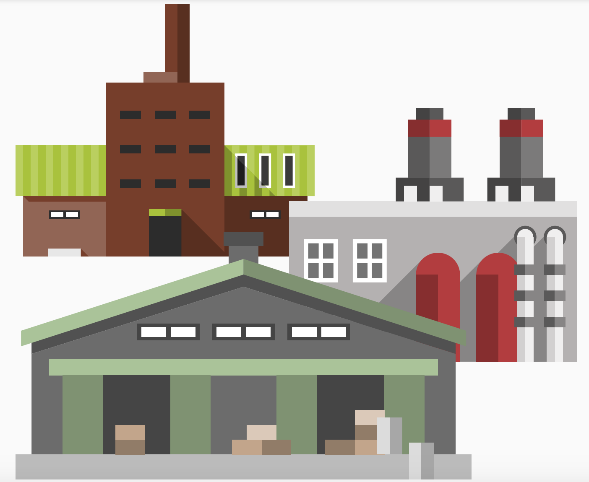

Modelos de gestión tecnológica e innovación
En esta Lección revisaremos el tema de la gestión tecnológica y proceso de innovación.

¿Qué distingue a las empresas innovadoras?
Si la innovación implica la obtención de ganancias económicas derivadas de productos o servicios novedosos, identificarás que la actividad de innovar está más presente de lo que pensabas en el sector empresarial. Vamos a conocer a continuación qué distingue a una empresa innovadora: